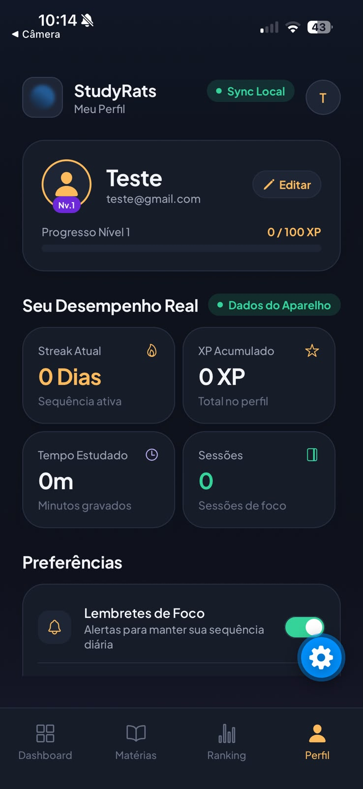

<!DOCTYPE html>
<html lang="pt-BR">
<head>
    <meta charset="UTF-8">
    <meta name="viewport" content="width=device-width, initial-scale=1.0">
    <title>StudyRats - Apresentação Técnica Fase 3: Câmera, Geolocalização e SQLite</title>
    <!-- Fontes Google -->
    <link rel="preconnect" href="https://fonts.googleapis.com">
    <link rel="preconnect" href="https://fonts.gstatic.com" crossorigin>
    <link href="https://fonts.googleapis.com/css2?family=Plus+Jakarta+Sans:wght@400;500;600;700;800&family=JetBrains+Mono:wght@400;500;700&display=swap" rel="stylesheet">
    <!-- Tailwind CSS CDN -->
    <script src="https://cdn.tailwindcss.com"></script>
    <script>
        tailwind.config = {
            theme: {
                extend: {
                    fontFamily: {
                        sans: ['"Plus Jakarta Sans"', 'sans-serif'],
                        mono: ['"JetBrains Mono"', 'monospace'],
                    },
                    colors: {
                        brand: {
                            coral: '#FF6B6B',
                            coralLight: '#FFEAEA',
                            orange: '#FA8231',
                            orangeLight: '#FFF2E5',
                            yellow: '#FFD32A',
                            yellowLight: '#FFFCEB',
                            green: '#20BF6B',
                            greenLight: '#E8F8F0',
                            blue: '#3867D6',
                            blueLight: '#EBF2FF',
                            purple: '#8854D0',
                            purpleLight: '#F3EDFC',
                            black: '#19191B',
                            bg: '#F6F7F9'
                        }
                    }
                }
            }
        }
    </script>
    <!-- React & Babel -->
    <script crossorigin src="https://unpkg.com/react@18/umd/react.production.min.js"></script>
    <script crossorigin src="https://unpkg.com/react-dom@18/umd/react-dom.production.min.js"></script>
    <script src="https://unpkg.com/@babel/standalone/babel.min.js"></script>
    <!-- Lucide Icons -->
    <script src="https://unpkg.com/lucide@latest"></script>
    <style>
        body { background-color: #F6F7F9; color: #19191B; } 
        .squircle { border-radius: 28px; }
        .squircle-sm { border-radius: 16px; }
        .slide-container { min-height: 70vh; display: flex; flex-direction: column; justify-content: center; }
        .code-block { font-family: 'JetBrains Mono', monospace; }
        ::-webkit-scrollbar { width: 8px; height: 8px; }
        ::-webkit-scrollbar-track { background: transparent; }
        ::-webkit-scrollbar-thumb { background: #cbd5e1; border-radius: 4px; }
        ::-webkit-scrollbar-thumb:hover { background: #94a3b8; }
    </style>
</head>
<body class="bg-brand-bg text-brand-black min-h-screen font-sans selection:bg-brand-blue selection:text-white">
    <div id="root"></div>

    <script type="text/babel">
        const { useState, useEffect } = React;

        const CodeSnippet = ({ title, code, language = "typescript" }) => (
            <div className="bg-[#1E1E24] text-gray-200 rounded-2xl overflow-hidden shadow-lg border border-gray-800 text-sm">
                <div className="bg-[#141418] px-4 py-2 border-b border-gray-800 flex items-center justify-between text-xs font-mono text-gray-400">
                    <span className="flex items-center gap-2">
                        <span className="w-2.5 h-2.5 rounded-full bg-red-500 inline-block"></span>
                        <span className="w-2.5 h-2.5 rounded-full bg-yellow-500 inline-block"></span>
                        <span className="w-2.5 h-2.5 rounded-full bg-green-500 inline-block"></span>
                        <span className="ml-2 font-bold text-gray-300">{title}</span>
                    </span>
                    <span className="uppercase text-[10px] tracking-wider text-gray-400 font-semibold">{language}</span>
                </div>
                <pre className="p-4 overflow-x-auto code-block text-xs leading-relaxed text-emerald-400">
                    <code>{code}</code>
                </pre>
            </div>
        );

        const slides = [
            // SLIDE 1: CAPA
            {
                id: "capa",
                section: "Abertura",
                title: "StudyRats — Apresentação Técnica Fase 3",
                tempoRecomendado: "0:45",
                theme: "blue",
                content: (
                    <div className="flex flex-col items-center justify-center text-center space-y-6 max-w-4xl mx-auto py-6">
                        <div className="inline-flex items-center gap-3 bg-brand-blueLight text-brand-blue px-6 py-2.5 rounded-full font-bold text-sm tracking-wide shadow-sm border border-brand-blue/20">
                            <i data-lucide="radio" className="w-4 h-4 animate-pulse"></i>
                            FASE 3: CÂMERA, GEOLOCALIZAÇÃO & PERSISTÊNCIA LOCAL (10 MIN)
                        </div>

                        <div className="w-24 h-24 bg-gradient-to-tr from-brand-blue to-brand-purple rounded-3xl flex items-center justify-center shadow-xl shadow-brand-blue/20 my-2">
                            <i data-lucide="camera" className="w-12 h-12 text-white"></i>
                        </div>

                        <h1 className="text-5xl md:text-6xl font-extrabold text-brand-black tracking-tight leading-tight">
                            Study<span className="text-brand-blue">Rats</span>
                        </h1>
                        <p className="text-2xl font-semibold text-gray-700 max-w-2xl leading-relaxed">
                            Engenharia de Software Mobile com <span className="text-brand-blue font-bold">Clean Architecture</span>, <span className="text-brand-purple font-bold">DDD</span>, <span className="text-brand-green font-bold">TDD Hermético</span> e <span className="text-brand-orange font-bold">SQLite</span>
                        </p>

                        <div className="grid grid-cols-2 gap-4 w-full max-w-lg pt-4 border-t border-gray-200">
                            <div className="bg-white p-4 rounded-2xl shadow-sm border border-gray-100">
                                <span className="text-xs text-gray-400 uppercase font-bold tracking-wider block">Equipe de Desenvolvimento</span>
                                <span className="text-base font-bold text-gray-800">Maria Clara Miguel & Sthefany Bueno</span>
                            </div>
                            <div className="bg-white p-4 rounded-2xl shadow-sm border border-gray-100">
                                <span className="text-xs text-gray-400 uppercase font-bold tracking-wider block">Suíte Automatizada</span>
                                <span className="text-base font-bold text-brand-green flex items-center justify-center gap-1">
                                    <i data-lucide="check-circle-2" className="w-4 h-4"></i> 172 Testes (100% Verdes)
                                </span>
                            </div>
                        </div>

                        <div className="text-xs text-gray-400 flex items-center gap-4 pt-2">
                            <span>Laboratório de Desenvolvimento Mobile — 2026.2</span>
                            <span>•</span>
                            <span>Tempo de Apresentação: 10 minutos</span>
                        </div>
                    </div>
                )
            },

            // SLIDE 2: TÓPICO 1 - O PROBLEMA E A SOLUÇÃO
            {
                id: "problema-solucao",
                section: "1. Abertura e Contextualização",
                title: "O Problema & A Solução: Câmera e GPS na Prática",
                tempoRecomendado: "1:15",
                theme: "coral",
                content: (
                    <div className="flex flex-col max-w-6xl mx-auto w-full space-y-6">
                        <div>
                            <span className="text-brand-coral font-bold text-sm tracking-wider uppercase">Tópico 1 do Roteiro</span>
                            <h2 className="text-4xl font-extrabold text-brand-black">Por que integrar Câmera e Geolocalização?</h2>
                            <p className="text-gray-600 text-lg mt-1">Transformando sessões de estudo abstratas em evidências físicas e contextuais tangíveis.</p>
                        </div>

                        <div className="grid md:grid-cols-2 gap-8 items-stretch">
                            <div className="bg-brand-coralLight/60 p-8 squircle border border-brand-coral/30 flex flex-col justify-between">
                                <div>
                                    <div className="w-12 h-12 rounded-2xl bg-brand-coral text-white flex items-center justify-center font-bold text-xl mb-6 shadow-md shadow-brand-coral/20">
                                        <i data-lucide="alert-octagon" className="w-6 h-6"></i>
                                    </div>
                                    <h3 className="text-2xl font-bold text-brand-coral mb-4">O Problema</h3>
                                    <ul className="space-y-4 text-gray-700 text-base leading-relaxed">
                                        <li className="flex items-start gap-3">
                                            <i data-lucide="x-circle" className="w-5 h-5 text-brand-coral shrink-0 mt-0.5"></i>
                                            <span><strong>Métricas Abstratas e Auto-declaração:</strong> Apps convencionais apenas disparam um cronômetro na tela. Não há garantia ou estímulo real de foco efetivo.</span>
                                        </li>
                                        <li className="flex items-start gap-3">
                                            <i data-lucide="x-circle" className="w-5 h-5 text-brand-coral shrink-0 mt-0.5"></i>
                                            <span><strong>Isolamento e Falta de Rastreabilidade:</strong> Estudar sozinho gera desmotivação crônica e sensação de estagnação.</span>
                                        </li>
                                        <li className="flex items-start gap-3">
                                            <i data-lucide="x-circle" className="w-5 h-5 text-brand-coral shrink-0 mt-0.5"></i>
                                            <span><strong>Desconhecimento do Ambiente Ideal:</strong> O estudante não sabe em quais locais físicos seu rendimento é superior.</span>
                                        </li>
                                    </ul>
                                </div>
                                <div className="mt-6 p-4 bg-white/70 rounded-xl text-xs text-gray-600 border border-brand-coral/20">
                                    <em>"Relógios sem contexto físico são facilmente fraudados ou ignorados pelo cérebro."</em>
                                </div>
                            </div>

                            <div className="bg-brand-greenLight/60 p-8 squircle border border-brand-green/30 flex flex-col justify-between">
                                <div>
                                    <div className="w-12 h-12 rounded-2xl bg-brand-green text-white flex items-center justify-center font-bold text-xl mb-6 shadow-md shadow-brand-green/20">
                                        <i data-lucide="shield-check" className="w-6 h-6"></i>
                                    </div>
                                    <h3 className="text-2xl font-bold text-brand-green mb-4">A Solução StudyRats</h3>
                                    <ul className="space-y-4 text-gray-700 text-base leading-relaxed">
                                        <li className="flex items-start gap-3">
                                            <i data-lucide="camera" className="w-5 h-5 text-brand-green shrink-0 mt-0.5"></i>
                                            <span><strong>Câmera como Evidência Visual:</strong> Fotografia do caderno, anotações, esquema ou livro aberto ao concluir a sessão. Alimenta o Feed Social com prova de dedicação.</span>
                                        </li>
                                        <li className="flex items-start gap-3">
                                            <i data-lucide="map-pin" className="w-5 h-5 text-brand-green shrink-0 mt-0.5"></i>
                                            <span><strong>Geolocalização como Contexto Espacial:</strong> Registro transparente das coordenadas onde a sessão foi realizada (biblioteca, universidade, casa, cafeteria).</span>
                                        </li>
                                        <li className="flex items-start gap-3">
                                            <i data-lucide="database" className="w-5 h-5 text-brand-green shrink-0 mt-0.5"></i>
                                            <span><strong>Persistência e Offline-First:</strong> Dados gravados atomicamente no banco de dados local (SQLite) sem risco de perda por falta de conexão.</span>
                                        </li>
                                    </ul>
                                </div>
                                <div className="mt-6 p-4 bg-white/70 rounded-xl text-xs text-gray-600 border border-brand-green/20">
                                    <strong>Resultado:</strong> Gamificação respaldada no mundo real com XP, streaks e ranking verídico.
                                </div>
                            </div>
                        </div>
                    </div>
                )
            },

            // SLIDE 3: TÓPICO 2 - PRINCÍPIOS ARQUITETURAIS (CLEAN ARCHITECTURE & DDD)
            {
                id: "principios-arquiteturais",
                section: "2. Princípios Arquiteturais",
                title: "Clean Architecture & DDD: Onde aparecem Câmera e GPS?",
                tempoRecomendado: "1:20",
                theme: "blue",
                content: (
                    <div className="flex flex-col max-w-6xl mx-auto w-full space-y-6">
                        <div>
                            <span className="text-brand-blue font-bold text-sm tracking-wider uppercase">Tópico 2 do Roteiro</span>
                            <h2 className="text-4xl font-extrabold text-brand-black">A Regra de Dependência em Ação</h2>
                            <p className="text-gray-600 text-lg mt-1">O Domínio governa as regras do negócio e permanece 100% puro; a infraestrutura se adequa aos contratos.</p>
                        </div>

                        <div className="grid md:grid-cols-4 gap-4">
                            <div className="bg-white p-5 rounded-2xl border-2 border-brand-purple shadow-sm flex flex-col justify-between">
                                <div>
                                    <div className="flex items-center justify-between mb-3">
                                        <span className="px-2.5 py-1 bg-brand-purpleLight text-brand-purple rounded-lg text-xs font-bold uppercase">Núcleo Puro</span>
                                        <i data-lucide="lock" className="w-4 h-4 text-brand-purple"></i>
                                    </div>
                                    <h4 className="font-extrabold text-lg text-brand-black mb-2">1. Domínio (DDD)</h4>
                                    <p className="text-xs text-gray-500 mb-3">Zero imports externos (sem React, Expo ou SO).</p>
                                    <ul className="text-xs space-y-2 text-gray-700">
                                        <li className="bg-brand-purpleLight/40 p-2 rounded-lg font-mono"><strong>ICameraGateway</strong> (Porta)</li>
                                        <li className="bg-brand-purpleLight/40 p-2 rounded-lg font-mono"><strong>ILocationGateway</strong> (Porta)</li>
                                        <li className="bg-brand-purpleLight/40 p-2 rounded-lg font-mono"><strong>Coordenada</strong> (Value Object)</li>
                                        <li className="bg-brand-purpleLight/40 p-2 rounded-lg font-mono"><strong>FotoSessao</strong> (Entidade)</li>
                                        <li className="bg-brand-purpleLight/40 p-2 rounded-lg font-mono"><strong>SessaoEstudo</strong> (Agregado)</li>
                                    </ul>
                                </div>
                                <div className="mt-4 pt-3 border-t text-[11px] text-brand-purple font-semibold">
                                    Contrato soberano
                                </div>
                            </div>

                            <div className="bg-white p-5 rounded-2xl border border-gray-200 shadow-sm flex flex-col justify-between">
                                <div>
                                    <div className="flex items-center justify-between mb-3">
                                        <span className="px-2.5 py-1 bg-brand-blueLight text-brand-blue rounded-lg text-xs font-bold uppercase">Orquestração</span>
                                        <i data-lucide="cpu" className="w-4 h-4 text-brand-blue"></i>
                                    </div>
                                    <h4 className="font-extrabold text-lg text-brand-black mb-2">2. Aplicação</h4>
                                    <p className="text-xs text-gray-500 mb-3">Casos de uso independentes de UI.</p>
                                    <ul className="text-xs space-y-2 text-gray-700">
                                        <li className="bg-brand-blueLight/40 p-2 rounded-lg font-mono"><strong>RegistrarSessaoUseCase</strong></li>
                                        <li className="text-[11px] text-gray-600">• GPS resiliente (opcional)</li>
                                        <li className="text-[11px] text-gray-600">• Anexação de FotoSessao</li>
                                        <li className="text-[11px] text-gray-600">• Concessão de XP e persistência</li>
                                    </ul>
                                </div>
                                <div className="mt-4 pt-3 border-t text-[11px] text-brand-blue font-semibold">
                                    Consome apenas o Domínio
                                </div>
                            </div>

                            <div className="bg-white p-5 rounded-2xl border border-gray-200 shadow-sm flex flex-col justify-between">
                                <div>
                                    <div className="flex items-center justify-between mb-3">
                                        <span className="px-2.5 py-1 bg-brand-orangeLight text-brand-orange rounded-lg text-xs font-bold uppercase">Adaptadores</span>
                                        <i data-lucide="plug" className="w-4 h-4 text-brand-orange"></i>
                                    </div>
                                    <h4 className="font-extrabold text-lg text-brand-black mb-2">3. Infraestrutura</h4>
                                    <p className="text-xs text-gray-500 mb-3">Implementação concreta dos contratos.</p>
                                    <ul className="text-xs space-y-2 text-gray-700">
                                        <li className="bg-brand-orangeLight/40 p-2 rounded-lg font-mono"><strong>ExpoCameraGateway</strong> (image-picker)</li>
                                        <li className="bg-brand-orangeLight/40 p-2 rounded-lg font-mono"><strong>ExpoLocationGateway</strong> (location)</li>
                                        <li className="bg-brand-orangeLight/40 p-2 rounded-lg font-mono"><strong>FotoStorage</strong> (file-system)</li>
                                        <li className="bg-brand-orangeLight/40 p-2 rounded-lg font-mono"><strong>SQLiteSessaoEstudoRepo</strong></li>
                                    </ul>
                                </div>
                                <div className="mt-4 pt-3 border-t text-[11px] text-brand-orange font-semibold">
                                    Inversão de Dependência (DIP)
                                </div>
                            </div>

                            <div className="bg-white p-5 rounded-2xl border border-gray-200 shadow-sm flex flex-col justify-between">
                                <div>
                                    <div className="flex items-center justify-between mb-3">
                                        <span className="px-2.5 py-1 bg-brand-greenLight text-brand-green rounded-lg text-xs font-bold uppercase">Interface</span>
                                        <i data-lucide="smartphone" className="w-4 h-4 text-brand-green"></i>
                                    </div>
                                    <h4 className="font-extrabold text-lg text-brand-black mb-2">4. Apresentação (UI)</h4>
                                    <p className="text-xs text-gray-500 mb-3">Componentes React Native e Telas.</p>
                                    <ul className="text-xs space-y-2 text-gray-700">
                                        <li className="bg-brand-greenLight/40 p-2 rounded-lg font-mono"><strong>sessao/nova.tsx</strong></li>
                                        <li className="text-[11px] text-gray-600">• Prévia fotográfica reativa</li>
                                        <li className="text-[11px] text-gray-600">• Toggle "Anexar Localização"</li>
                                        <li className="bg-brand-greenLight/40 p-2 rounded-lg font-mono"><strong>SessaoFocoProvider</strong></li>
                                        <li className="bg-brand-greenLight/40 p-2 rounded-lg font-mono"><strong>feed.tsx</strong> (Cards com badge)</li>
                                    </ul>
                                </div>
                                <div className="mt-4 pt-3 border-t text-[11px] text-brand-green font-semibold">
                                    Dispara Caso de Uso
                                </div>
                            </div>
                        </div>

                        <div className="bg-gray-900 text-white p-4 rounded-2xl flex items-center justify-between text-xs font-mono">
                            <div className="flex items-center gap-3">
                                <span className="w-3 h-3 rounded-full bg-emerald-400 animate-pulse"></span>
                                <span><strong>architecture.spec.ts:</strong> Validação por AST que proíbe imports de frameworks no Domínio.</span>
                            </div>
                            <span className="text-emerald-400 font-bold">100% PASSING</span>
                        </div>
                    </div>
                )
            },

            // SLIDE 4: TÓPICO 3 - A ESTRATÉGIA DE TDD
            {
                id: "estrategia-tdd",
                section: "3. Estratégia de TDD",
                title: "A Estratégia de TDD: Como testamos Câmera e GPS?",
                tempoRecomendado: "1:15",
                theme: "orange",
                content: (
                    <div className="flex flex-col max-w-6xl mx-auto w-full space-y-6">
                        <div>
                            <span className="text-brand-orange font-bold text-sm tracking-wider uppercase">Tópico 3 do Roteiro</span>
                            <h2 className="text-4xl font-extrabold text-brand-black">Como testamos sensores nativos com TDD?</h2>
                            <p className="text-gray-600 text-lg mt-1">Isolamento hermético: execução 100% em Node.js com Fakes controlados e Jest Spies.</p>
                        </div>

                        <div className="grid md:grid-cols-2 gap-8">
                            <div className="bg-white p-7 squircle border border-gray-200 shadow-sm space-y-4">
                                <h3 className="text-2xl font-bold text-brand-orange flex items-center gap-3">
                                    <i data-lucide="git-commit" className="w-7 h-7"></i> Como foi feito:
                                </h3>
                                <ul className="space-y-3 text-gray-700 text-sm leading-relaxed">
                                    <li className="flex items-start gap-2">
                                        <i data-lucide="check" className="w-5 h-5 text-brand-orange shrink-0 mt-0.5"></i>
                                        <span><strong>Sem necessidade de aparelho ou emulador:</strong> Criamos <code>MockCameraGateway</code> e <code>MockLocationGateway</code> em memória para simular qualquer comportamento físico.</span>
                                    </li>
                                    <li className="flex items-start gap-2">
                                        <i data-lucide="check" className="w-5 h-5 text-brand-orange shrink-0 mt-0.5"></i>
                                        <span><strong>Testes de Borda na Infraestrutura:</strong> No arquivo <code>Gateways.spec.ts</code>, espionamos os módulos nativos do Expo via <code>jest.spyOn</code> para simular concessão e recusa de permissões.</span>
                                    </li>
                                    <li className="flex items-start gap-2">
                                        <i data-lucide="check" className="w-5 h-5 text-brand-orange shrink-0 mt-0.5"></i>
                                        <span><strong>Execução Ultra Rápida:</strong> A suíte roda em ~22 segundos, permitindo feedback imediato a cada refatoração.</span>
                                    </li>
                                </ul>
                            </div>

                            <div className="bg-white p-7 squircle border border-gray-200 shadow-sm space-y-4">
                                <h3 className="text-2xl font-bold text-brand-green flex items-center gap-3">
                                    <i data-lucide="badge-check" className="w-7 h-7"></i> Nossos testes garantem que:
                                </h3>
                                <ul className="space-y-3 text-gray-700 text-sm leading-relaxed">
                                    <li className="flex items-start gap-2">
                                        <i data-lucide="check" className="w-5 h-5 text-brand-green shrink-0 mt-0.5"></i>
                                        <span><strong>GPS é Evidência Resiliente:</strong> Se a permissão for negada ou o GPS falhar, a sessão de estudo <em>ainda é salva com sucesso</em> e o XP é creditado normalmente.</span>
                                    </li>
                                    <li className="flex items-start gap-2">
                                        <i data-lucide="check" className="w-5 h-5 text-brand-green shrink-0 mt-0.5"></i>
                                        <span><strong>Cancelamento Gracioso:</strong> Se o usuário fechar a câmera sem tirar foto, nenhuma exceção quebra o aplicativo.</span>
                                    </li>
                                    <li className="flex items-start gap-2">
                                        <i data-lucide="check" className="w-5 h-5 text-brand-green shrink-0 mt-0.5"></i>
                                        <span><strong>Integridade de FotoSessao:</strong> Uma foto só pode ser anexada se possuir o mesmo <code>sessaoId</code> da sessão raiz.</span>
                                    </li>
                                </ul>
                            </div>
                        </div>

                        <CodeSnippet 
                            title="Trecho de Teste com Mock (RegistrarSessaoUseCase.spec.ts)"
                            code={`class MockLocationGateway implements ILocationGateway {
  permissaoNegada = false;
  async obterLocalizacaoAtual(): Promise<Coordenadas> {
    if (this.permissaoNegada) throw new Error('Permissão de localização negada');
    return { latitude: -23.5505, longitude: -46.6333 };
  }
}

it('should register session even when location permission fails', async () => {
  locationGateway.permissaoNegada = true;
  const res = await useCase.execute({ usuarioId: '123', duracaoMinutos: 45, comFoto: false, anexarGps: true });
  expect(res.isSuccess).toBe(true);
  expect(res.value.coordenada).toBeUndefined(); // Resiliente!
});`}
                        />
                    </div>
                )
            },

            // SLIDE 5: TÓPICO 4 - O DOMÍNIO E AS INTERFACES (BASE DO CONTRATO)
            {
                id: "dominio-interfaces",
                section: "4. Domínio e Interfaces",
                title: "O Domínio e as Interfaces: A Base do Contrato",
                tempoRecomendado: "1:20",
                theme: "purple",
                content: (
                    <div className="flex flex-col max-w-6xl mx-auto w-full space-y-6">
                        <div>
                            <span className="text-brand-purple font-bold text-sm tracking-wider uppercase">Tópico 4 do Roteiro</span>
                            <h2 className="text-4xl font-extrabold text-brand-black">Contratos Declarativos e Modelagem Rica</h2>
                            <p className="text-gray-600 text-lg mt-1">Value Objects auto-validados e interfaces agnósticas de hardware.</p>
                        </div>

                        <div className="grid md:grid-cols-2 gap-6">
                            <div className="space-y-4">
                                <CodeSnippet 
                                    title="src/domain/gateways/ICameraGateway.ts"
                                    code={`export interface ICameraGateway {
  /**
   * Abre a câmera nativa do dispositivo.
   * @returns URI local da foto, ou null se cancelado.
   */
  capturarFoto(): Promise<string | null>;
}`}
                                />
                                <CodeSnippet 
                                    title="src/domain/gateways/ILocationGateway.ts"
                                    code={`export interface Coordenadas {
  latitude: number;
  longitude: number;
}

export interface ILocationGateway {
  /**
   * Solicita a coordenada atual do GPS.
   * Lança erro caso a permissão seja negada.
   */
  obterLocalizacaoAtual(): Promise<Coordenadas>;
}`}
                                />
                            </div>

                            <div className="space-y-4">
                                <CodeSnippet 
                                    title="src/domain/value-objects/Coordenada.ts"
                                    code={`export class Coordenada {
  private constructor(private readonly props: Required<CoordenadaProps>) {}

  public static create(props: CoordenadaProps): Coordenada {
    // Invariante DDD: Limites do globo terrestre
    if (props.latitude < -90 || props.latitude > 90) {
      throw new Error('Latitude inválida');
    }
    if (props.longitude < -180 || props.longitude > 180) {
      throw new Error('Longitude inválida');
    }
    return new Coordenada({
      latitude: props.latitude,
      longitude: props.longitude,
      timestamp: props.timestamp ?? new Date(),
    });
  }
}`}
                                />
                                <div className="bg-brand-purpleLight/50 p-4 rounded-2xl border border-brand-purple/20 text-xs text-gray-700 space-y-2">
                                    <p className="font-bold text-brand-purple text-sm">Por que isso é poderoso?</p>
                                    <p>• <strong>Sem acoplamento:</strong> O Domínio não faz ideia se a câmera vem de Expo, CameraX nativa do Android ou AVFoundation do iOS.</p>
                                    <p>• <strong>Garantia de consistência:</strong> Nenhuma coordenada geográfica impossível consegue entrar no sistema graças ao Value Object imutável.</p>
                                </div>
                            </div>
                        </div>
                    </div>
                )
            },

            // SLIDE 6: TÓPICO 5 - O TESTE (TDD NA PRÁTICA)
            {
                id: "teste-pratica",
                section: "5. Teste na Prática",
                title: "O Teste: TDD na Prática e Métricas de Cobertura",
                tempoRecomendado: "1:10",
                theme: "green",
                content: (
                    <div className="flex flex-col max-w-6xl mx-auto w-full space-y-6">
                        <div>
                            <span className="text-brand-green font-bold text-sm tracking-wider uppercase">Tópico 5 do Roteiro</span>
                            <h2 className="text-4xl font-extrabold text-brand-black">172 Testes Verdes e Ciclo Red-Green-Refactor</h2>
                            <p className="text-gray-600 text-lg mt-1">Evidência empírica de robustez em todas as camadas da aplicação.</p>
                        </div>

                        <div className="grid md:grid-cols-3 gap-6">
                            <div className="bg-white p-6 rounded-2xl border border-gray-200 shadow-sm flex flex-col items-center text-center">
                                <span className="text-5xl font-extrabold text-brand-green mb-2">44</span>
                                <span className="text-sm font-bold text-gray-800 uppercase tracking-wide">Test Suites</span>
                                <p className="text-xs text-gray-500 mt-2">100% das suítes de teste passando sem advertências ou falhas.</p>
                            </div>

                            <div className="bg-white p-6 rounded-2xl border border-gray-200 shadow-sm flex flex-col items-center text-center">
                                <span className="text-5xl font-extrabold text-brand-blue mb-2">172</span>
                                <span className="text-sm font-bold text-gray-800 uppercase tracking-wide">Testes Unitários</span>
                                <p className="text-xs text-gray-500 mt-2">Cobrindo Domínio, Casos de Uso, Gateways e SQLite.</p>
                            </div>

                            <div className="bg-white p-6 rounded-2xl border border-gray-200 shadow-sm flex flex-col items-center text-center">
                                <span className="text-5xl font-extrabold text-brand-purple mb-2">~22s</span>
                                <span className="text-sm font-bold text-gray-800 uppercase tracking-wide">Tempo de Execução</span>
                                <p className="text-xs text-gray-500 mt-2">Velocidade máxima em Node.js com WebAssembly SQLite (sql.js).</p>
                            </div>
                        </div>

                        <div className="bg-[#121316] text-gray-300 p-6 rounded-2xl font-mono text-xs shadow-2xl border border-gray-800 space-y-1.5 overflow-x-auto">
                            <div className="text-gray-500 mb-2 font-bold pb-2 border-b border-gray-800 flex items-center justify-between">
                                <span>TERMINAL — JEST TEST RUNNER</span>
                                <span className="text-emerald-400">PASSED</span>
                            </div>
                            <div className="text-emerald-400">PASS src/infrastructure/gateways/__tests__/Gateways.spec.ts</div>
                            <div className="text-emerald-400">PASS src/infrastructure/storage/__tests__/FotoStorage.spec.ts</div>
                            <div className="text-emerald-400">PASS src/infrastructure/repositories/__tests__/SQLiteSessaoEstudoRepository.spec.ts</div>
                            <div className="text-emerald-400">PASS src/infrastructure/database/__tests__/migrations.spec.ts</div>
                            <div className="text-emerald-400">PASS src/application/use-cases/__tests__/RegistrarSessaoUseCase.spec.ts</div>
                            <div className="text-emerald-400">PASS src/domain/value-objects/__tests__/Coordenada.spec.ts</div>
                            <div className="text-emerald-400">PASS src/domain/entities/__tests__/FotoSessao.spec.ts</div>
                            <div className="text-emerald-400">PASS src/__tests__/architecture.spec.ts</div>
                            <div className="pt-3 border-t border-gray-800 text-white font-bold flex items-center justify-between">
                                <span>Test Suites: <strong className="text-emerald-400">44 passed</strong>, 44 total</span>
                                <span>Tests: <strong className="text-emerald-400">172 passed</strong>, 172 total</span>
                                <span>Time: <strong className="text-yellow-400">22.499 s</strong></span>
                            </div>
                        </div>
                    </div>
                )
            },

            // SLIDE 7: APLICAÇÃO - O CASO DE USO EM AÇÃO
            {
                id: "caso-de-uso",
                section: "Aplicação em Ação",
                title: "Orquestração: O Caso de Uso RegistrarSessaoUseCase",
                tempoRecomendado: "1:10",
                theme: "blue",
                content: (
                    <div className="flex flex-col max-w-6xl mx-auto w-full space-y-6">
                        <div>
                            <span className="text-brand-blue font-bold text-sm tracking-wider uppercase">Fluxo de Aplicação</span>
                            <h2 className="text-4xl font-extrabold text-brand-black">Como os componentes conversam entre si</h2>
                            <p className="text-gray-600 text-lg mt-1">Orquestrando hardware, regras de negócio e banco de dados de maneira atômica.</p>
                        </div>

                        <div className="grid md:grid-cols-2 gap-6">
                            <CodeSnippet 
                                title="src/application/use-cases/RegistrarSessaoUseCase.ts"
                                code={`async execute(request: RegistrarSessaoRequest): Promise<RegistrarSessaoResponse> {
  // 1. Validar usuário existente
  const usuario = await this.usuarioRepository.buscarPorId(request.usuarioId);
  if (!usuario) return { isSuccess: false, error: 'Usuário não encontrado' };

  // 2. GPS como evidência opcional (não bloqueante)
  const coordenada = request.anexarGps ? await this.obterCoordenada() : undefined;

  // 3. Criar entidade raiz SessaoEstudo
  const sessao = SessaoEstudo.create({
    usuarioId: request.usuarioId,
    duracaoMinutos: request.duracaoMinutos,
    coordenada,
  });

  // 4. Anexar Foto (reaproveita pré-captura ou aciona câmera)
  if (request.comFoto) {
    const uriLocal = request.fotoUri ?? (await this.cameraGateway.capturarFoto());
    if (uriLocal) {
      sessao.anexarFoto(FotoSessao.create({ sessaoId: sessao.id, uriLocal }));
    }
  }

  // 5. Atribuir XP e persistir agregados
  usuario.adicionarXP(request.duracaoMinutos);
  await this.sessaoRepository.salvar(sessao);
  await this.usuarioRepository.salvar(usuario);

  return { isSuccess: true, value: sessao };
}`}
                            />

                            <div className="space-y-4 flex flex-col justify-center">
                                <div className="bg-white p-5 rounded-2xl border border-gray-200 shadow-sm flex items-start gap-4">
                                    <div className="w-10 h-10 rounded-xl bg-brand-blueLight text-brand-blue flex items-center justify-center font-bold shrink-0">1</div>
                                    <div>
                                        <h4 className="font-bold text-gray-800">Captura e Prévia na UI</h4>
                                        <p className="text-xs text-gray-500 mt-1">O estudante fotografa o caderno antes de iniciar a sessão, confere a prévia na tela e a URI é anexada de forma desacoplada pelo caso de uso.</p>
                                    </div>
                                </div>

                                <div className="bg-white p-5 rounded-2xl border border-gray-200 shadow-sm flex items-start gap-4">
                                    <div className="w-10 h-10 rounded-xl bg-brand-orangeLight text-brand-orange flex items-center justify-center font-bold shrink-0">2</div>
                                    <div>
                                        <h4 className="font-bold text-gray-800">Falha de GPS Silenciosa</h4>
                                        <p className="text-xs text-gray-500 mt-1">O método <code>obterCoordenada()</code> engole qualquer recusa de satélite para não penalizar o tempo que o aluno efetivamente estudou.</p>
                                    </div>
                                </div>

                                <div className="bg-white p-5 rounded-2xl border border-gray-200 shadow-sm flex items-start gap-4">
                                    <div className="w-10 h-10 rounded-xl bg-brand-greenLight text-brand-green flex items-center justify-center font-bold shrink-0">3</div>
                                    <div>
                                        <h4 className="font-bold text-gray-800">Gamificação e XP Atômico</h4>
                                        <p className="text-xs text-gray-500 mt-1">Ao final de cada ciclo, o ganho de XP (1 minuto = 1 XP) é atribuído ao usuário e salvo em conjunto no repositório.</p>
                                    </div>
                                </div>
                            </div>
                        </div>
                    </div>
                )
            },

            // SLIDE 8: TÓPICO 6 - IMPLEMENTAÇÃO DA INFRAESTRUTURA (ADAPTADORES EXPO)
            {
                id: "implementacao-infra",
                section: "6. Infraestrutura (Adaptadores)",
                title: "A Infraestrutura: APIs Modernas do Ecossistema Expo",
                tempoRecomendado: "1:15",
                theme: "orange",
                content: (
                    <div className="flex flex-col max-w-6xl mx-auto w-full space-y-6">
                        <div>
                            <span className="text-brand-orange font-bold text-sm tracking-wider uppercase">Tópico 6 do Roteiro</span>
                            <h2 className="text-4xl font-extrabold text-brand-black">A tecnologia se adequa ao Domínio</h2>
                            <p className="text-gray-600 text-lg mt-1">Uso de <code>expo-image-picker</code>, <code>expo-location</code> e <code>expo-file-system</code> como adaptadores de hardware.</p>
                        </div>

                        <div className="grid md:grid-cols-3 gap-6">
                            <div className="bg-white p-5 rounded-2xl border border-gray-200 shadow-sm space-y-3 flex flex-col justify-between">
                                <div>
                                    <div className="w-10 h-10 rounded-xl bg-brand-orangeLight text-brand-orange flex items-center justify-center font-bold mb-3">
                                        <i data-lucide="camera" className="w-5 h-5"></i>
                                    </div>
                                    <h4 className="font-bold text-gray-800">ExpoCameraGateway</h4>
                                    <p className="text-xs text-gray-500 mb-2"><code>expo-image-picker</code></p>
                                    <ul className="text-xs space-y-1.5 text-gray-600">
                                        <li>• Solicita <code>requestCameraPermissionsAsync</code></li>
                                        <li>• Aciona <code>launchCameraAsync</code> com qualidade 0.8 e corte</li>
                                        <li>• Integração opcional com persistência perene</li>
                                    </ul>
                                </div>
                                <div className="text-[11px] font-mono text-gray-400 bg-gray-50 p-2 rounded-lg">
                                    app.json: cameraPermission
                                </div>
                            </div>

                            <div className="bg-white p-5 rounded-2xl border border-gray-200 shadow-sm space-y-3 flex flex-col justify-between">
                                <div>
                                    <div className="w-10 h-10 rounded-xl bg-brand-blueLight text-brand-blue flex items-center justify-center font-bold mb-3">
                                        <i data-lucide="navigation" className="w-5 h-5"></i>
                                    </div>
                                    <h4 className="font-bold text-gray-800">ExpoLocationGateway</h4>
                                    <p className="text-xs text-gray-500 mb-2"><code>expo-location</code></p>
                                    <ul className="text-xs space-y-1.5 text-gray-600">
                                        <li>• Solicita <code>requestForegroundPermissionsAsync</code></li>
                                        <li>• Aferição via <code>getCurrentPositionAsync</code></li>
                                        <li>• Converte payload nativo para o formato puro <code>Coordenadas</code></li>
                                    </ul>
                                </div>
                                <div className="text-[11px] font-mono text-gray-400 bg-gray-50 p-2 rounded-lg">
                                    app.json: locationWhenInUsePermission
                                </div>
                            </div>

                            <div className="bg-white p-5 rounded-2xl border border-gray-200 shadow-sm space-y-3 flex flex-col justify-between">
                                <div>
                                    <div className="w-10 h-10 rounded-xl bg-brand-greenLight text-brand-green flex items-center justify-center font-bold mb-3">
                                        <i data-lucide="hard-drive" className="w-5 h-5"></i>
                                    </div>
                                    <h4 className="font-bold text-gray-800">FotoStorage</h4>
                                    <p className="text-xs text-gray-500 mb-2"><code>expo-file-system</code></p>
                                    <ul className="text-xs space-y-1.5 text-gray-600">
                                        <li>• Resolve o problema do cache volátil (<code>/cache</code>)</li>
                                        <li>• Move as fotos para <code>Paths.document/fotos_sessao/</code></li>
                                        <li>• Gera hashes e nomes únicos perenes</li>
                                    </ul>
                                </div>
                                <div className="text-[11px] font-mono text-gray-400 bg-gray-50 p-2 rounded-lg">
                                    Armazenamento local protegido
                                </div>
                            </div>
                        </div>

                        <div className="p-4 bg-brand-orangeLight/40 border border-brand-orange/20 rounded-2xl text-xs text-gray-700 flex items-center justify-between">
                            <span className="flex items-center gap-2">
                                <i data-lucide="info" className="w-4 h-4 text-brand-orange"></i>
                                <strong>Princípio da Substituição de Liskov e DIP:</strong> Nenhum detalhe da API do Expo vaza para o Domínio ou para a Camada de Aplicação.
                            </span>
                        </div>
                    </div>
                )
            },

            // SLIDE 9: TÓPICO 7 - SALVANDO NO BANCO DE DADOS LOCAL (SQLITE)
            {
                id: "banco-sqlite",
                section: "7. Banco de Dados Local",
                title: "Salvando os Dados no SQLite Local do Celular",
                tempoRecomendado: "1:20",
                theme: "coral",
                content: (
                    <div className="flex flex-col max-w-6xl mx-auto w-full space-y-6">
                        <div>
                            <span className="text-brand-coral font-bold text-sm tracking-wider uppercase">Tópico 7 do Roteiro</span>
                            <h2 className="text-4xl font-extrabold text-brand-black">Persistência Relacional com Migrations e Cascata</h2>
                            <p className="text-gray-600 text-lg mt-1">Uso de <code>expo-sqlite</code> nativo com PRAGMA journal_mode = WAL e Foreign Keys ativas.</p>
                        </div>

                        <div className="grid md:grid-cols-2 gap-6">
                            <CodeSnippet 
                                title="Schema Relacional (src/infrastructure/database/migrations.ts)"
                                language="sql"
                                code={`-- Agregado Raiz (com Value Object Coordenada embutido)
CREATE TABLE IF NOT EXISTS sessoes_estudo (
  id TEXT PRIMARY KEY NOT NULL,
  usuario_id TEXT NOT NULL,
  disciplina_id TEXT NOT NULL,
  duracao_minutos INTEGER NOT NULL,
  created_at TEXT NOT NULL,
  sync_status TEXT NOT NULL DEFAULT 'pending',
  latitude REAL,
  longitude REAL,
  coordenada_timestamp TEXT
);

-- Entidade Dependente FotoSessao (ON DELETE CASCADE)
CREATE TABLE IF NOT EXISTS fotos_sessao (
  id TEXT PRIMARY KEY NOT NULL,
  sessao_id TEXT NOT NULL UNIQUE REFERENCES sessoes_estudo (id) ON DELETE CASCADE,
  uri_local TEXT NOT NULL,
  url_remota TEXT,
  upload_status TEXT NOT NULL DEFAULT 'pending'
);`}
                            />

                            <div className="space-y-4 flex flex-col justify-between">
                                <div className="bg-white p-5 rounded-2xl border border-gray-200 shadow-sm space-y-3">
                                    <h4 className="font-bold text-gray-800 text-sm flex items-center gap-2 text-brand-coral">
                                        <i data-lucide="database" className="w-4 h-4"></i> Decisões de Modelagem Relacional
                                    </h4>
                                    <ul className="text-xs space-y-2 text-gray-600">
                                        <li className="flex items-start gap-2">
                                            <span className="font-bold text-brand-coral shrink-0">•</span>
                                            <span><strong>Embutimento de Value Object:</strong> Como <code>Coordenada</code> não possui identidade própria, suas colunas (<code>latitude</code>, <code>longitude</code>, <code>timestamp</code>) ficam na tabela de sessões.</span>
                                        </li>
                                        <li className="flex items-start gap-2">
                                            <span className="font-bold text-brand-coral shrink-0">•</span>
                                            <span><strong>Cascata e Integridade:</strong> A restrição <code>ON DELETE CASCADE</code> garante que ao remover a sessão de estudos, a foto correspondente é eliminada atomicamente do banco.</span>
                                        </li>
                                        <li className="flex items-start gap-2">
                                            <span className="font-bold text-brand-coral shrink-0">•</span>
                                            <span><strong>Transação Atômica:</strong> O <code>SQLiteSessaoEstudoRepository</code> salva a sessão e a foto sob <code>withTransactionAsync</code>, eliminando estados inconsistentes.</span>
                                        </li>
                                    </ul>
                                </div>

                                <div className="bg-white p-5 rounded-2xl border border-gray-200 shadow-sm space-y-2">
                                    <h4 className="font-bold text-gray-800 text-sm flex items-center gap-2 text-brand-blue">
                                        <i data-lucide="git-branch" className="w-4 h-4"></i> Migrations Versionadas
                                    </h4>
                                    <p className="text-xs text-gray-600">
                                        Utilizamos o padrão recomendado pelo SQLite de <code>PRAGMA user_version</code>. Ao atualizar o app na loja, novas tabelas são criadas automaticamente sem perda de dados históricos.
                                    </p>
                                </div>
                            </div>
                        </div>
                    </div>
                )
            },

            // SLIDE 10: TELAS MOBILE REAIS
            {
                id: "telas-reais",
                section: "Demonstração Mobile",
                title: "A Experiência no App: Interface e Telas Reais",
                tempoRecomendado: "0:50",
                theme: "blue",
                content: (
                    <div className="flex flex-col max-w-6xl mx-auto w-full space-y-6">
                        <div>
                            <span className="text-brand-blue font-bold text-sm tracking-wider uppercase">Interface do Usuário</span>
                            <h2 className="text-4xl font-extrabold text-brand-black">Câmera e GPS na Experiência do Estudante</h2>
                            <p className="text-gray-600 text-lg mt-1">Conectando o hardware às interações fluidas do React Native e Expo Router.</p>
                        </div>

                        <div className="grid md:grid-cols-3 gap-6 items-center">
                            <div className="bg-white p-4 rounded-3xl border border-gray-200 shadow-md flex flex-col items-center">
                                <span className="text-xs font-bold text-gray-400 uppercase mb-2">Tela de Nova Sessão</span>
                                <div className="w-full h-80 rounded-2xl overflow-hidden bg-gray-100 flex items-center justify-center border border-gray-100">
                                    
                                </div>
                                <span className="text-xs text-gray-600 mt-3 text-center">Seleção de Disciplina, Timer e Toggle de GPS</span>
                            </div>

                            <div className="bg-white p-4 rounded-3xl border border-gray-200 shadow-md flex flex-col items-center">
                                <span className="text-xs font-bold text-gray-400 uppercase mb-2">Feed Social com Fotos</span>
                                <div className="w-full h-80 rounded-2xl overflow-hidden bg-gray-100 flex items-center justify-center border border-gray-100">
                                    
                                </div>
                                <span className="text-xs text-gray-600 mt-3 text-center">Evidência fotográfica e badges de foco</span>
                            </div>

                            <div className="bg-white p-4 rounded-3xl border border-gray-200 shadow-md flex flex-col items-center">
                                <span className="text-xs font-bold text-gray-400 uppercase mb-2">Ranking e Perfil com XP</span>
                                <div className="w-full h-80 rounded-2xl overflow-hidden bg-gray-100 flex items-center justify-center border border-gray-100">
                                    
                                </div>
                                <span className="text-xs text-gray-600 mt-3 text-center">Gamificação e pontuação acumulada</span>
                            </div>
                        </div>
                    </div>
                )
            },

            // SLIDE 11: CONCLUSÃO
            {
                id: "conclusao",
                section: "Conclusão",
                title: "Síntese dos Resultados da Fase 3",
                tempoRecomendado: "0:45",
                theme: "green",
                content: (
                    <div className="flex flex-col items-center justify-center text-center space-y-8 max-w-4xl mx-auto py-6">
                        <div className="w-20 h-20 bg-brand-greenLight text-brand-green rounded-full flex items-center justify-center mb-2 shadow-lg shadow-brand-green/20">
                            <i data-lucide="check-check" className="w-10 h-10"></i>
                        </div>

                        <h2 className="text-5xl font-extrabold text-brand-black tracking-tight">
                            Fase 3 Concluída com Sucesso!
                        </h2>

                        <div className="grid grid-cols-2 md:grid-cols-4 gap-4 w-full">
                            <div className="bg-white p-5 rounded-2xl border border-gray-100 shadow-sm">
                                <span className="text-2xl font-black text-brand-blue block">100% Puro</span>
                                <span className="text-xs text-gray-500 font-semibold mt-1 block">Domínio & Contratos DDD</span>
                            </div>
                            <div className="bg-white p-5 rounded-2xl border border-gray-100 shadow-sm">
                                <span className="text-2xl font-black text-brand-orange block">Expo Nativo</span>
                                <span className="text-xs text-gray-500 font-semibold mt-1 block">Câmera & Localização</span>
                            </div>
                            <div className="bg-white p-5 rounded-2xl border border-gray-100 shadow-sm">
                                <span className="text-2xl font-black text-brand-coral block">SQLite WAL</span>
                                <span className="text-xs text-gray-500 font-semibold mt-1 block">Persistência Relacional</span>
                            </div>
                            <div className="bg-white p-5 rounded-2xl border border-gray-100 shadow-sm">
                                <span className="text-2xl font-black text-brand-green block">172 Testes</span>
                                <span className="text-xs text-gray-500 font-semibold mt-1 block">Cobertura Total com TDD</span>
                            </div>
                        </div>

                        <div className="p-6 bg-white rounded-3xl border border-gray-200 max-w-2xl text-base text-gray-700 leading-relaxed shadow-sm">
                            <em>"O software demonstrou na prática que a complexidade de hardware e bancos de dados pode ser domada com princípios sólidos de Clean Architecture e testes herméticos."</em>
                        </div>

                        <div className="pt-4 border-t border-gray-200 w-full max-w-md">
                            <p className="text-lg font-bold text-gray-900">Perguntas & Respostas</p>
                            <p className="text-sm text-gray-500">Obrigado pela atenção!</p>
                        </div>
                    </div>
                )
            }
        ];

        const App = () => {
            const [currentSlide, setCurrentSlide] = useState(0);
            const [menuOpen, setMenuOpen] = useState(false);
            const [timerSeconds, setTimerSeconds] = useState(600); // 10 minutos
            const [timerRunning, setTimerRunning] = useState(false);

            useEffect(() => {
                let interval = null;
                if (timerRunning && timerSeconds > 0) {
                    interval = setInterval(() => setTimerSeconds(prev => prev - 1), 1000);
                } else if (timerSeconds === 0) {
                    setTimerRunning(false);
                }
                return () => clearInterval(interval);
            }, [timerRunning, timerSeconds]);

            const formatTime = (secs) => {
                const m = Math.floor(secs / 60);
                const s = secs % 60;
                return `${String(m).padStart(2, '0')}:${String(s).padStart(2, '0')}`;
            };

            const prev = () => setCurrentSlide(p => Math.max(0, p - 1));
            const next = () => setCurrentSlide(p => Math.min(slides.length - 1, p + 1));

            useEffect(() => {
                const handleKeyDown = (e) => {
                    if (e.key === 'ArrowRight' || e.key === 'PageDown' || e.key === ' ') {
                        next();
                    } else if (e.key === 'ArrowLeft' || e.key === 'PageUp') {
                        prev();
                    } else if (e.key === 't' || e.key === 'T') {
                        setTimerRunning(r => !r);
                    } else if (e.key === 'm' || e.key === 'M') {
                        setMenuOpen(o => !o);
                    }
                };
                window.addEventListener('keydown', handleKeyDown);
                return () => window.removeEventListener('keydown', handleKeyDown);
            }, []);

            useEffect(() => {
                if (window.lucide) {
                    window.lucide.createIcons();
                }
            }, [currentSlide, menuOpen]);

            const slide = slides[currentSlide];

            const themeColors = {
                blue: "bg-brand-blueLight text-brand-blue border-brand-blue/30",
                coral: "bg-brand-coralLight text-brand-coral border-brand-coral/30",
                green: "bg-brand-greenLight text-brand-green border-brand-green/30",
                purple: "bg-brand-purpleLight text-brand-purple border-brand-purple/30",
                orange: "bg-brand-orangeLight text-brand-orange border-brand-orange/30",
            };

            return (
                <div className="flex flex-col min-h-screen">
                    <header className="sticky top-0 z-40 bg-white/90 backdrop-blur-md border-b border-gray-200 px-6 py-3 flex items-center justify-between">
                        <div className="flex items-center gap-4">
                            <button 
                                onClick={() => setMenuOpen(true)} 
                                className="p-2.5 rounded-xl hover:bg-gray-100 text-gray-700 transition flex items-center gap-2 font-bold text-sm"
                                title="Abrir Índice (Atalho: M)"
                            >
                                <i data-lucide="menu" className="w-5 h-5"></i>
                                <span className="hidden sm:inline">Índice</span>
                            </button>
                            <div className="h-6 w-px bg-gray-200 hidden sm:block"></div>
                            <span className="font-extrabold text-lg text-brand-black tracking-tight hidden sm:inline">
                                Study<span className="text-brand-blue">Rats</span> <span className="text-xs text-gray-400 font-semibold ml-1">Fase 3</span>
                            </span>
                        </div>

                        <div className="flex items-center gap-3">
                            <div className="flex items-center gap-2 bg-gray-100 px-3 py-1.5 rounded-full border border-gray-200">
                                <i data-lucide="clock" className={`w-4 h-4 ${timerSeconds < 120 ? 'text-red-500 animate-pulse' : 'text-gray-500'}`}></i>
                                <span className={`font-mono text-xs font-bold ${timerSeconds < 120 ? 'text-red-600' : 'text-gray-700'}`}>
                                    {formatTime(timerSeconds)}
                                </span>
                                <button 
                                    onClick={() => setTimerRunning(!timerRunning)} 
                                    className="p-1 hover:bg-gray-200 rounded-full transition"
                                    title="Pausar/Iniciar Cronômetro (Atalho: T)"
                                >
                                    <i data-lucide={timerRunning ? "pause" : "play"} className="w-3.5 h-3.5 text-gray-600"></i>
                                </button>
                                <button 
                                    onClick={() => { setTimerRunning(false); setTimerSeconds(600); }} 
                                    className="p-1 hover:bg-gray-200 rounded-full transition"
                                    title="Reiniciar Timer"
                                >
                                    <i data-lucide="rotate-ccw" className="w-3.5 h-3.5 text-gray-400"></i>
                                </button>
                            </div>

                            <span className={`text-xs font-bold px-3 py-1.5 rounded-full border ${themeColors[slide.theme]}`}>
                                {slide.section}
                            </span>
                        </div>
                    </header>

                    <div className="w-full bg-gray-200 h-1">
                        <div 
                            className="bg-brand-blue h-1 transition-all duration-300"
                            style={{ width: `${((currentSlide + 1) / slides.length) * 100}%` }}
                        ></div>
                    </div>

                    {menuOpen && (
                        <div className="fixed inset-0 z-50 bg-black/40 backdrop-blur-sm flex">
                            <div className="w-96 bg-white h-full shadow-2xl p-6 flex flex-col justify-between overflow-y-auto">
                                <div>
                                    <div className="flex items-center justify-between pb-4 border-b border-gray-200 mb-4">
                                        <h3 className="font-extrabold text-xl text-gray-900 flex items-center gap-2">
                                            <i data-lucide="list-ordered" className="w-5 h-5 text-brand-blue"></i> Roteiro de 10 min
                                        </h3>
                                        <button onClick={() => setMenuOpen(false)} className="p-2 rounded-full hover:bg-gray-100">
                                            <i data-lucide="x" className="w-5 h-5 text-gray-600"></i>
                                        </button>
                                    </div>
                                    <div className="space-y-1.5">
                                        {slides.map((s, idx) => (
                                            <button
                                                key={s.id}
                                                onClick={() => { setCurrentSlide(idx); setMenuOpen(false); }}
                                                className={`w-full text-left p-3 rounded-xl text-sm font-semibold transition flex items-center justify-between ${currentSlide === idx ? 'bg-brand-blue text-white shadow-md' : 'hover:bg-gray-100 text-gray-700'}`}
                                            >
                                                <div className="flex items-center gap-2.5 truncate">
                                                    <span className={`text-xs font-mono ${currentSlide === idx ? 'text-white/80' : 'text-gray-400'}`}>
                                                        {String(idx + 1).padStart(2, '0')}
                                                    </span>
                                                    <span className="truncate">{s.title}</span>
                                                </div>
                                                <span className={`text-[10px] font-mono px-2 py-0.5 rounded-full shrink-0 ml-2 ${currentSlide === idx ? 'bg-white/20 text-white' : 'bg-gray-100 text-gray-500'}`}>
                                                    {s.tempoRecomendado}
                                                </span>
                                            </button>
                                        ))}
                                    </div>
                                </div>
                                <div className="pt-4 border-t border-gray-100 text-xs text-gray-400 text-center">
                                    Atalhos: ←/→ (Navegar) | T (Timer) | M (Menu)
                                </div>
                            </div>
                            <div className="flex-1" onClick={() => setMenuOpen(false)}></div>
                        </div>
                    )}

                    <main className="flex-1 flex flex-col justify-center px-6 py-8 max-w-7xl mx-auto w-full">
                        <div className="slide-container" key={slide.id}>
                            {slide.content}
                        </div>
                    </main>

                    <footer className="sticky bottom-0 bg-white/95 backdrop-blur-md border-t border-gray-200 px-6 py-4 flex items-center justify-between z-30">
                        <div className="text-xs text-gray-500 flex items-center gap-2">
                            <span className="font-bold text-gray-800">{slide.title}</span>
                            <span>•</span>
                            <span>Tempo sugerido: <strong>{slide.tempoRecomendado} min</strong></span>
                        </div>

                        <div className="flex items-center gap-4">
                            <button 
                                onClick={prev} 
                                disabled={currentSlide === 0}
                                className="px-5 py-2.5 rounded-full bg-white border border-gray-200 shadow-sm hover:bg-gray-50 disabled:opacity-30 disabled:pointer-events-none transition flex items-center gap-2 text-sm font-bold text-gray-700"
                            >
                                <i data-lucide="chevron-left" className="w-4 h-4"></i> Anterior
                            </button>

                            <span className="text-sm font-bold text-gray-600 font-mono">
                                {currentSlide + 1} <span className="text-gray-300">/</span> {slides.length}
                            </span>

                            <button 
                                onClick={next} 
                                disabled={currentSlide === slides.length - 1}
                                className="px-6 py-2.5 rounded-full bg-brand-blue text-white shadow-md hover:bg-brand-blue/90 disabled:opacity-30 disabled:pointer-events-none transition flex items-center gap-2 text-sm font-bold"
                            >
                                Próximo <i data-lucide="chevron-right" className="w-4 h-4"></i>
                            </button>
                        </div>
                    </footer>
                </div>
            );
        };

        const root = ReactDOM.createRoot(document.getElementById('root'));
        root.render(<App />);
    </script>
</body>
</html>

